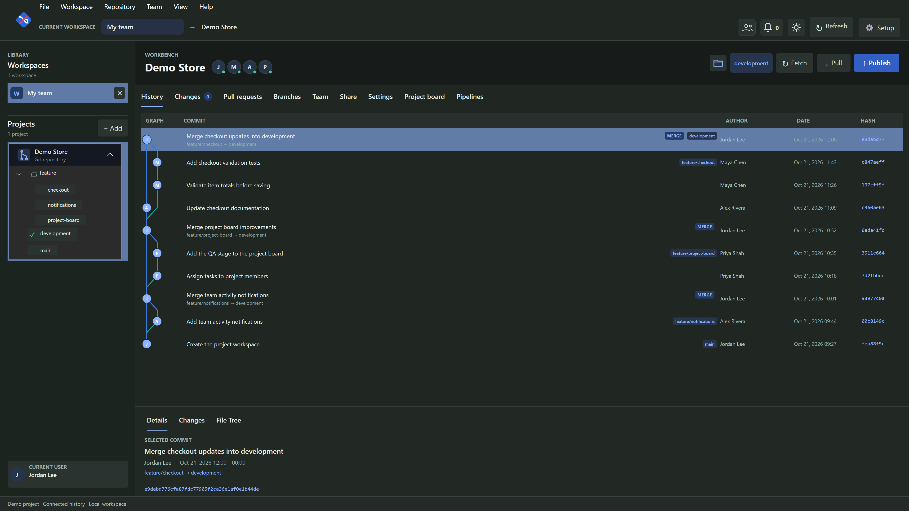

Run
StartedStarted by Jordan Lee
development · 81c42d7aA shared place for your code, reviews, and next release.
Hosted on your own machine. Built around your team.
No GitHub account or cloud repository required.
Follow connected commits, branches, and merges in History.

FROM THE FIRST EDIT TO THE NEXT RELEASE
AI or your teammate can write the code. Your team can see what changed, review it, and decide what ships.
CHANGES & PULL REQUESTS
Read the additions and removals in context. Stage your own work, preview changes a member chooses to share, and review a branch before it joins the project.
24 public async Task<Booking> SaveAsync(Booking booking)
25 {
26 − repository.Save(booking);
27 − return booking;
26 + ArgumentNullException.ThrowIfNull(booking);
27 + await repository.SaveAsync(booking);
28 + await history.RecordAsync(booking.Id);
29 + return booking;
30 }ONE HOST. A CONNECTED TEAM.
The repository lives on the owner’s machine. XGit.IO gives your team a way to work together, wherever they connect from.
Local members connect to the owner over LAN HTTPS and verify the host’s certificate fingerprint. Remote members can use a configured SSH tunnel or trusted relay.
XGit.IO is the team workspace, not a cloud repository. Internet access requires an owner configured connection. Replicas serve confirmed history and cannot accept pushes.
PROJECT BOARD
Give the work a place to go. Organize tasks, track progress, and move a finished update into QA for the team to check.
Try the preview: drag “Item totals” into QA.
LOCAL DOCKER WORKFLOWS
A passing build is one step. When your policy requires owner approval, deployment waits for that decision.
Started by Jordan Lee
development · 81c42d7aBuilt locally in Docker
Reviewed artifact readyWaiting for the project owner
Waiting for owner approval
Configured deployment targetSTART WITH YOUR OWN MACHINE
XGit.IO is free to download and use for individuals, teams, and businesses. No purchase or subscription is required.
Install XGit.IO on your Windows computer and create your first workspace.
Download for Windowsv0.1.0-beta · .exe installer · unsigned betaFor M-series Macs, including M4. Drag the app into Applications to get started.
Download for macOSv0.1.0-beta · .dmg · not Apple notarizedGit is required for repository work. Docker with a running Linux engine is needed for build and test workflows. Deployment services you choose may have their own charges.
The writable Git repository and project settings live on the owner’s machine. Members work in their own local clones. GitHub is used to distribute the XGit.IO downloads and documentation; you do not need a GitHub account to host a project in XGit.IO.
The owner configures LAN HTTPS, an SSH tunnel, or a self hosted internet relay. Members join a specific project using an invitation and role. Verify the host’s trust information before connecting. A relay transports traffic and does not store the repository.
An optional verified replica can serve read only clone and fetch requests for commits it has confirmed, while the relay and replica remain online. Publishing and project management wait for the owner to reconnect. Replicas do not accept pushes and are not a replacement for backups.
XGit.IO reviews changes in your local Git working copy, whether those edits came from you, a teammate, or an external AI coding tool. The Changes view is for reviewing and staging the code; it is not a built in AI code generator.
Yes. XGit.IO is free to download and use for individuals, teams, and businesses. No purchase or subscription is required. The application source code remains private. See the published license and terms for the full conditions.
The Windows beta installer is unsigned. The macOS app has an ad hoc integrity signature and is not notarized by Apple. Follow the documented installation instructions for a trusted download. Review the beta’s current limits before using it for critical work.
BEHIND XGIT.IO
Joever Monceda
Software Engineer & Solution Architect crafting XGit.IO in my spare time.